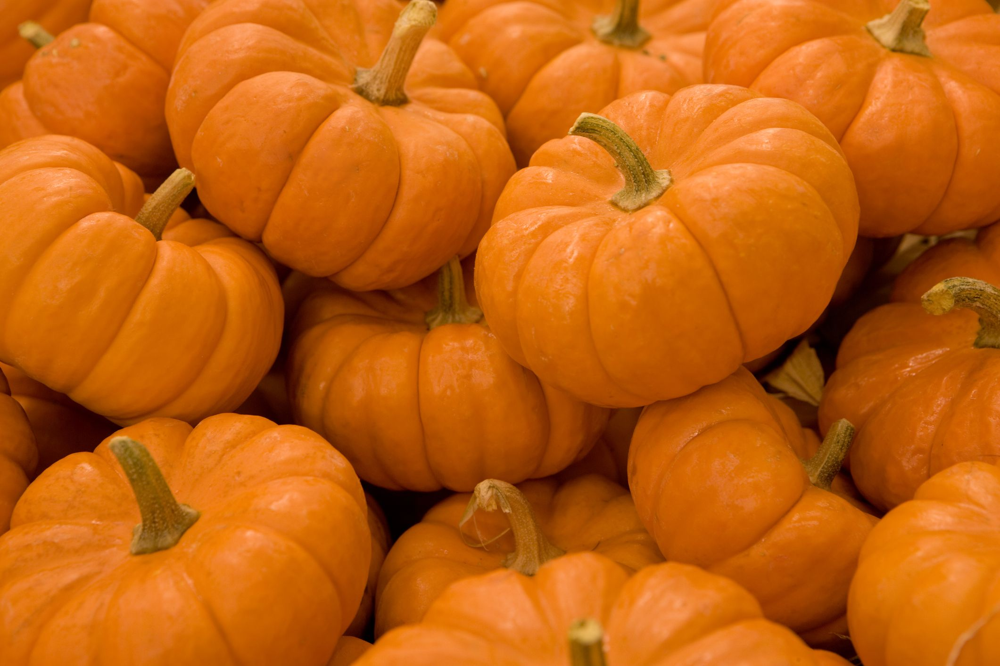

Pumkins
A pumpkin is a cultivar of a squash plant, most commonly of Cucurbita pepo, that is round with smooth, slightly ribbed skin, and most often deep yellow to orange in coloration.[1] The thick shell contains the seeds and pulp. Some exceptionally large cultivars of squash with similar appearance have also been derived from Cucurbita maxima. Specific cultivars of winter squash derived from other species, including C. argyrosperma and C. moschata, are also sometimes called "pumpkin".[1])
